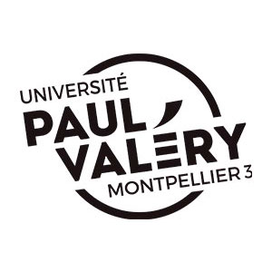
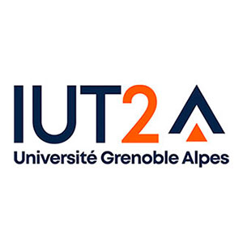
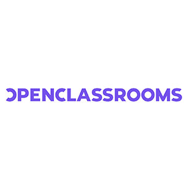
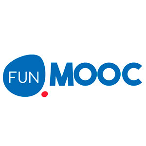
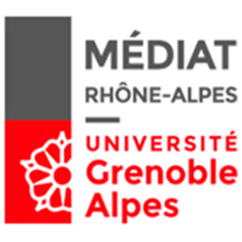

Formation
Diplômes

Master 2 professionnel Information et communication
Spécialité " Gestion de l’Information et documentation "Ce master répond aux besoins de formation spécialisée dans le cadre des nouvelles fonctions de la société de l'information et de la connaissance : rassembler, analyser, communiquer, négocier et assurer la gestion des documents pour tout type de support. Il prépare les professionnels à créer, utiliser et communiquer le savoir comme support de l’information et de la documentation ; il est construit à partir d’un modèle pragmatique « savoir et faire ». Les objectifs de cette formation sont d’acquérir des compétences en matière de gestion de l’information et de la documentation à partir de l’utilisation des tecnhologies de l'information et de la communication. Projet individuel objet d'un travail de fin d'étude : Conception d'un catalogue numérique de l'offre projets UNIT Objectif : faire connaître et promouvoir les réalisations issues des appels à projets UNIT, en donnant à voir des usages possibles et des exemples d'utilisation pour les étudiants et les enseignants des disciplines concernées, en émettant des recommandations pédagogiques sur la base des expériences d'équipes enseignantes parties prenantes aux projets.
Mention TB
Mention TB

Licence professionnelle BDAN - Bibliothèque, documentation et archives numériques
L'objectif de la licence est de former des spécialistes de la gestion de l'information numérique capables de créer et de diffuser des collections numériques mais également de traiter les problèmes liés à la présence de documents numériques dans les organisations.
Mémoire de stage portant sur l’activité de Veille au CTP Objectif : réaliser une enquête de besoins au moyen d’un questionnaire en ligne pour évaluer les pratiques d’information des personnels et cerner les attentes. A partir de l’analyse des résultats, dresser des constats et proposer quelques pistes d'amélioration possibles.
Mention AB
Mémoire de stage portant sur l’activité de Veille au CTP Objectif : réaliser une enquête de besoins au moyen d’un questionnaire en ligne pour évaluer les pratiques d’information des personnels et cerner les attentes. A partir de l’analyse des résultats, dresser des constats et proposer quelques pistes d'amélioration possibles.
Mention AB
Licence de Sociologie
La licence Sociologie est une formation généraliste offrant une culture sociologique basée sur l’enseignement des fondamentaux de la discipline tant théoriques que méthodologiques : l’histoire et la théorie de la sociologie, la méthode et la pratique de l’enquête en sciences sociales et la connaissance des faits sociaux contemporains.
Mention AB
Mention AB
Maîtrise AES - Administration économique et sociale
Mention "Développement social"La maîtrise AES Développement social est une formation pluridisciplinaire permettant d’acquérir des connaissances et des compétences dans la compréhension des phénomènes sociaux, économiques, juridiques et politiques. Elle a pour objectif de former des étudiants capables, en tant que managers, d’assurer des prises de décision, avec une orientation thématique vers l’intervention et le développement économique, social et socio-culturel : analyse de l’action publique, sociale et européenne, économie politique et du développement, socio-économie du travail et des territoires, droit du travail et mutations des métiers du développement social, droit et gestion associative… ainsi que l’apprentissage de la méthodologie de la recherche au service d’une analyse de terrain. Mémoire de recherche : « Problématique du métier et services à domicile » L’objet de ce travail a été d’interroger le champ des services de proximté en le confrontant à une grille d’analyse sur le métier.
Mention B
Mention B
Autres formations

Gérez un projet d'ingénierie pédagogique
Maîtriser une méthodologie d'ingénierie pédagogique simple et efficace pour concevoir des dispositifs de formations : le modèle ADDIE
Réalisez un cours en ligne
Connaître les principales clés pour gérer le processus de conception d'un cours en ligne
Déployez votre formation en blended learning
Comprendre l’intérêt et les modalités du blended learning et savoir mettre en œuvre l'hybridation d'une formation

MOOC Transformer l'enseignement et la formation : mission hybridation !
Examiner quelques sujets-phare en lien avec les débats actuels sur l'hybridation de contenus en s'appuyant avant tout sur des retours d'expériences issus de pratiques de terrain.
MOOC Réaliser des vidéos pro avec son smartphone
Découvrir les règles de l’art du tournage et du montage et réaliser des vidéos courtes (de communication, d’instantané, de fiction, d’actualité, etc.)
MOOC Architecture de l'information
S’initier à l’architecture de l’information, ses notions, ses méthodes et ses outils pour progresser dans l’organisation des espaces numériques
MOOC Web sémantique et Web de données
Se former aux standards du Web de données et du Web sémantique en découvrant les langages RDF, SPARQL, les vocabulaires RDFS, OWL, etc.

Formation de préparation à l'ENSSIB
Préparation aux concours de catégorie A des bibliothèques de la fonction publique d’Etat et aide à la construction de son projet professionnel en bibliothèque.